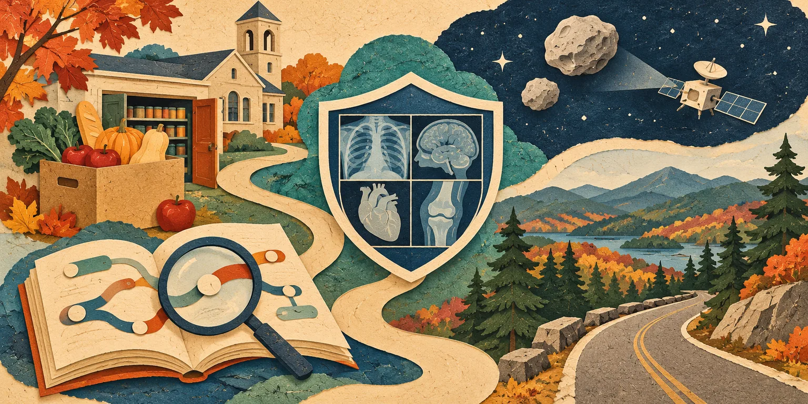

Independent daily digestFive stories worth your time
The Daily Curiosity
Keeping essential connections open: campus pantries span the holiday break, AI learns to search from the start, medical-image software gets a security warning, Hera prepares an asteroid reveal, and Essex County roads enter winter with renewed pavement.

AI-generated editorial illustration · The Daily Curiosity. Conceptual artwork, not documentary imagery or a technical diagram.
STORY 01 · SUNY · Student support
The campus pantry stays part of college life over the holiday
SUNY’s Thanksgiving update highlights food support for students who remain near campus, including break meal boxes at Potsdam and a plan to keep its pantry open during Thanksgiving and winter breaks. Adirondack’s Community Hub pantry will continue serving students through the holiday, while Clinton Community College combines year-round student assistance with a recent community meal distribution. These efforts address a practical gap in college access: a break in classes does not mean students’ food needs take a break.
Source published 2026-11-24 · Briefing date 2026-11-25
A smaller model learns to look things up before it learns to chat
A new preprint from EPFL and University of Toronto researchers trains language models on ordinary documents augmented with search queries and retrieved evidence, introducing search during pretraining. In the reported knowledge-intensive tests, a 1.4-billion-parameter QueryLM matched or beat a compute-matched 3.3-billion-parameter baseline, and the advantage persisted after supervised fine-tuning. The released checkpoints and data make the approach testable by others, while suggesting that how a model learns to retrieve information can matter alongside its size. These are research benchmark results, not evidence that search-trained models are universally more capable or immune to false information.
Source published 2026-11-19 · Briefing date 2026-11-25
Medical-image labeling software needs a boundary around its uploads
MONAI Label maintainers have published a critical advisory for a flaw that lets uploaded images or labels write files outside their intended storage directory, potentially enabling code execution. The advisory lists versions through 0.8.5 as affected and 0.8.6 as patched, and notes that authentication is disabled by default. For research IT teams, the warning makes a specialized annotation server part of the security inventory: maintainers recommend restricting network access, enabling authentication and limiting the service’s write permissions while arranging an upgrade.
Source published 2026-11-18 · Briefing date 2026-11-25
Hera brings the asteroid-deflection experiment back into close view
ESA says Hera has arrived to investigate Dimorphos and is scheduled to present close-up images today, November 25, beginning at 19:45 Central European Time. The mission returns to the asteroid struck by NASA’s DART spacecraft in 2022, whose orbital change was larger than scientists had predicted. Examining the aftermath should help explain why the impact worked as it did, a necessary step toward making asteroid deflection a more predictable technique. The scheduled reveal is the current milestone; this edition does not treat the forthcoming presentation as already completed.
Source published 2026-11-18 · Briefing date 2026-11-25
Essex County’s quieter highways share in a major paving season
New York reports completing $56 million in pavement renewal across the Capital Region and Essex County, covering more than 194 lane miles during 2026. That includes more than $9.2 million for key stretches of U.S. Route 9 and state Routes 9N and 22 in Essex County, connecting local travel and tourism routes to the broader regional network. The announcement distinguishes completed work from a separate $18.7 million Northway project north of the Mohawk River, where resurfacing is expected to resume in spring. For North Country travelers, the significance is the maintenance of everyday connections as the region moves into winter, rather than a newly opened highway.
Source published 2026-11-24 · Briefing date 2026-11-25